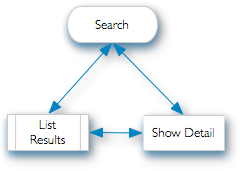

Searching the Athenaeum catalogue
You can search Athenaeum in multiple ways:
- from a (FileMaker) desktop client
- using a web browser (i.e. Chrome, Microsoft Edge[^1], FireFox or Apple's Safari)
- via the various data "APIs" exposed by FileMaker (these are not covered here)
The search computer (device) is often referred to as an OPAC (Online public access catalog) which is a bit contradictory. The original term referred to the catalogue that was searched rather than the computer that was doing the searching—but there you go!
However, the usage usually refers to the computer that is accessing the online database. However, the word makes no reference to how the search is performed. This document is explicitly about that and what is seen by the end user.
While the different methods generally return similar results, the input and output can look very different. Each environment offers their own advantages.
Using the Desktop Client
A "desktop" client means running the FileMaker Pro software on a Windows or Mac computer and connecting to the database. The appearance of the search interface is controlled by the account used to log in to the database and certain configuration options by the administrator.
Searching the catalogue can be achieved in a number of ways and the results are presented according to the librarian’s preferences (stored in admin) and whether the searcher is logged in to Athenaeum as an “administrator”, a “guest” or an “issue” user.1
Types of Searches
Users can search either by:
- Fast Find
- Easy Find
- Detail Find
Search Concept
In it’s simplest form, the search process is described by this diagram:

 The user performs a search and sees a list of results (the “found set” of results).
The user can refine that search or click on an item in the list to see detail for that result.
Starting a "Fast Find" Search
Some ways to start a search are:
Select a search option from the Athenaeum menu:
or press the corresponding keyboard shortcut (control-2 on windows, command-2 on mac). These will bring up the search screen.
Enter your search criteria into the search screen:
or into one of the search widgets on the title lists (different screens depending upon your log in account):
or on the administrator's main menu:
The appearance of (Desktop) Fast Find
The administrator can configure, in Admin:
- the background graphic (if any)
- a simple search screen with very few options (a single field on the background) or
- whether a list of items marked "Highlighted" or "Topical" (or whatever term the administrator defines) is included on the screen
- whether the search window includes administrator defined search suggestions (such as topical subject headings, reading lists, etc.)
- whether the search window includes links to the top issued items
- OR Athenaeum shows a search window with links to a nominated web page (choosing the "web page" option will turn off "show topical", "show Top Issues", "show reading lists")
- whether Athenaeum shows a button for showing "Recent" library acquisitions ("new" items)
The configuration screen (Admin->Customisation->Search/OPAC) looks like this:
Fast Find
This is the simplest search and will be most familiar with anyone who has used a search engine like Google 2
Remember that the background appearance will probably look different, depending upon the configured background.
Enter a search term and press the return key (or click the search button with the magnifying glass and "All").
What Fast Find searches
Fast find searches these fields in the catalogue:
- title
- subjects (both normal subject field and the subjects_copyright field)
- series
- author
- other author
- notes
- custom1
- custom2
- bar code
- call number
- dewey and
- ISBN
Athenaeum also searches variants of the entered search terms, depending upon your configuration.
About Libraries
If you have set up multiple libraries in your catalogue and configured only some of them to be visible to "guest" users, then searches can be constrained to these users.
Constrain Fast Find
Refine the Fast Find search by performing the search again with more or different terms or by constraining the search to the title, author (including other author/illustrator) or subject fields by clicking the appropriate button.

note: that the "any" button is equivalent to just typing the enter key after typing your search term
Literal Strings
When you enter multiple words, Athenaeum looks for those words in any order in any of the fields.
If you want to look for an explicit phrase, simply type "" characters around the search phrase.
Wild-card searches
You can use the "*" and "@" characters in your word searches.
"" means look for any number of unknown characters. So searching for wr will find "word", "war", "warden", "whistler", "wrestler" etc.
"@" means look for the matching words where the character is unknown. So gr@y will find both "grey" and "gray".
And combine these to build more complex searches. So searching for w@r* will find "war", "wars", "word", "words", "wordy", but not "whistler", "wrestler"
Easy Find
When more complex searches required, such as searches using boolean operators, try an Easy Find by clicking the easy find button.
Click on the Easy button on the search screen. 
This screen allows you to enter multiple criteria (AND searches) by entering information in more than one field. It also allows you to do multiple searches (OR searches) by entering multiple requests (New Request button). Lastly it will do an Omit (NOT search) by clicking on the Omit button.
Boolean Easy Find “AND” search
Find all books with Maori in the subject AND written by R. Bacon:
- Enter ‘Maori’ in the Subject field, enter ‘Bacon’ in the Author field.
- Press the Enter key or click on the OK button.
All books listed meet BOTH criteria specified.
Boolean Easy Find “OR” search
Search for all books that have Maori in the Subject field OR are written by R. Bacon:
Enter ‘Maori’ in the Subject field.
- Next, click on the New Request button.
- Enter ‘Bacon’ in the author field.
- Press the Enter key or click on the OK button. Note that the list obtained here is longer than that using the above search.
- Search for all books that have Maori OR war in the Subject field:
- Enter ‘Maori’ in the Subject field.
- Next, click on the New Request button.
- Enter ‘war’ in the subject field.
- Press the Enter key or click on the OK button.
Boolean Easy Find “NOT” search (omit)
Search for all books that do NOT have Maori in the subject field:
- Enter ‘Maori’ in the Subject field.
- Next, click on the Omit button.
- Press the Enter key or click on the OK button. Books in the list will be all books that do NOT have Maori in the subject field.
By combining the techniques demonstrated above you can build up very precise and complex searches.
Macrons and Inflections
Athenaeum will handle most searches for words with macrons with or without the searcher entering the macron.
So if an entry is entitled (say) "The Illustrated Encyclopedia Of Māori Myth And Legend" (note the macron on the "a") then searching for either Maori or Māori will find this entry. Likewise, using the Macron in the search term will find matching words without the macron.
If you wish to constrain results to words with only the macron, wrap the word with "" to turn it into a literal search (e.g. "Māori").
This also works for other inflection characters such as ü and é.
Detail Find
 Click the Detail button at the top of the Fast Find or Easy Find screens.
This option is similar to the easy find, except that it allows you to search most fields in the catalog.
The detail screen presented to the user depends upon their log in.
The administrator will see

Non-administrators will see this:

By combining the techniques demonstrated above you can build up very precise and complex searches.
About Subjects
On non-administrator views, clicking an entry will show more detail in a pop-over. That detail will list the first 10 subjects as clickable buttons, or hyperlinks. Clicking on the subject will search for all entries in the catalogue matching the clicked subject.
Search Window Options
Highlighted items
Topical or Highlighted items 4 items drawn from a randomised list of catalogue items who have the “highlighted” flag set.
Top Issues
Top Issues — Athenaeum periodically counts the top issued items over the previous 60 days to generate this list
Search Window with Suggestions
Shows the search box plus a list of curated terms that, when clicked (or tapped), will search the subjects field for the clicked term.
Search Window with a web page
When configured to include a web page, Athenaeum will show either:-
-
the page linked to the URL you enter. Note: enter the full URL which includes the "http://" or "https://" schemes
-
or raw html that you paste into the field. The content might contain messages to library patrons or lists of items, etc.
If you are also configuring the web OPAC with your "blog" content, then you can configure the desktop client to show the web OPAC!
Adding an item to the Highlight List
Find the item, then click on the check box with your "highlighted" label in the Detail screen.
Note that the name of the highlighted flag will be what you set in Admin->Customisation->Catalogue
when logged in with a “guest” account or with an “issue” account, the search process and the results presented are almost identical. ↩
It should be noted that Athenaeum was using single field searches years before Google existed, and Athenaeum’s predecessor (“That Book is SumWare) used it before AltaVista and Yahoo were launched! ↩
when NOT using strict authority, each subject should be entered on a new line in the subjects field. Each line becomes a clickable link on the detail screen. ↩